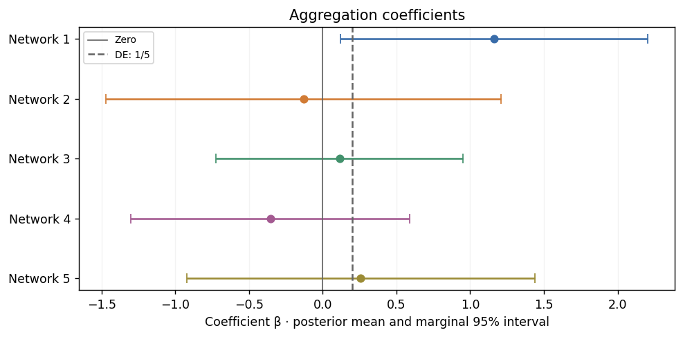
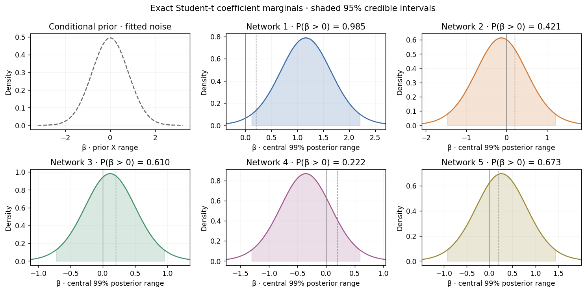
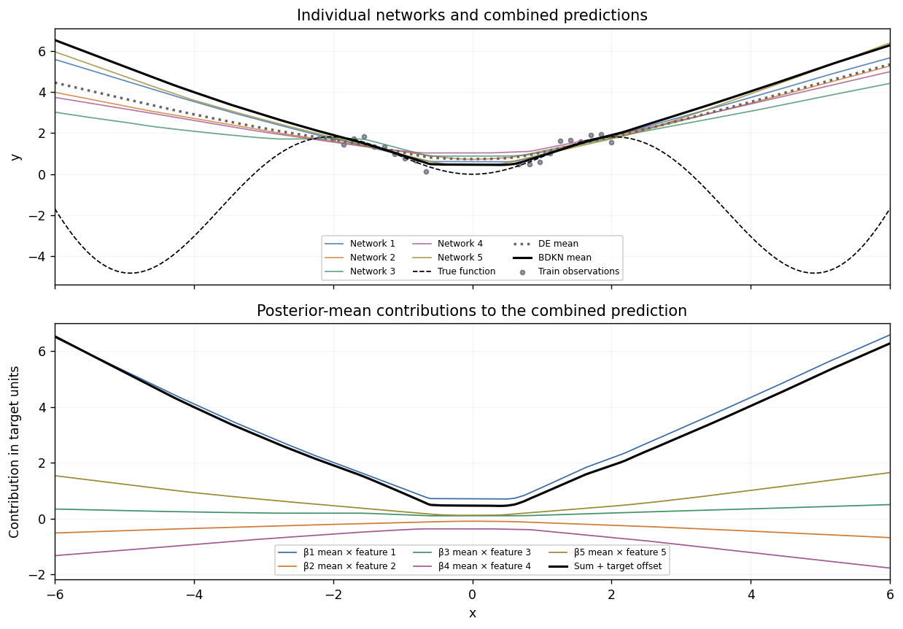
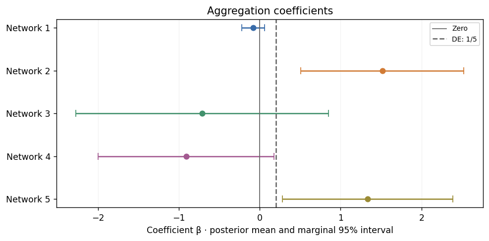
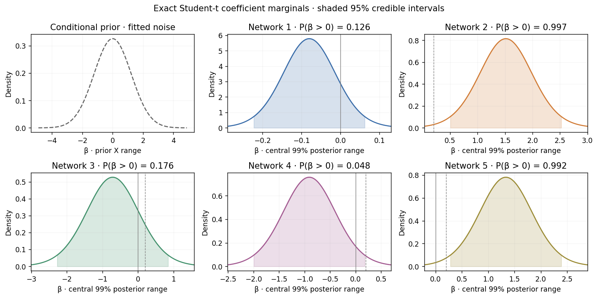
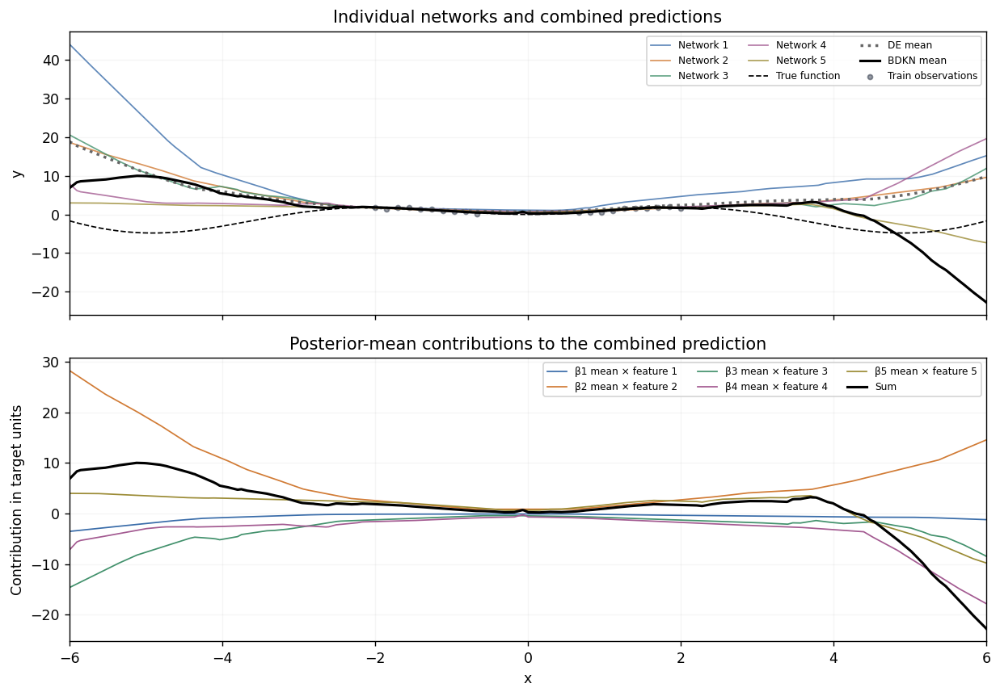
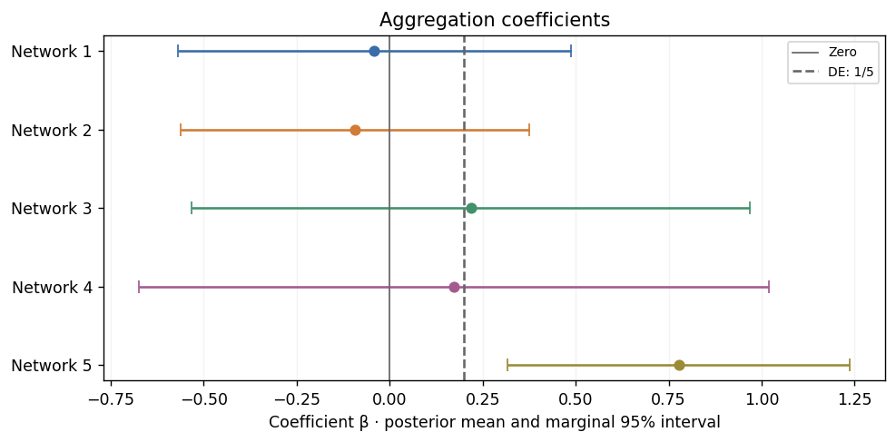
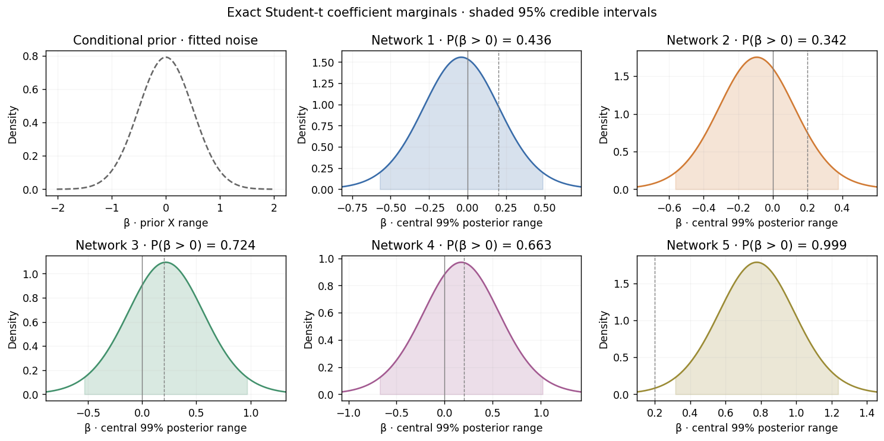
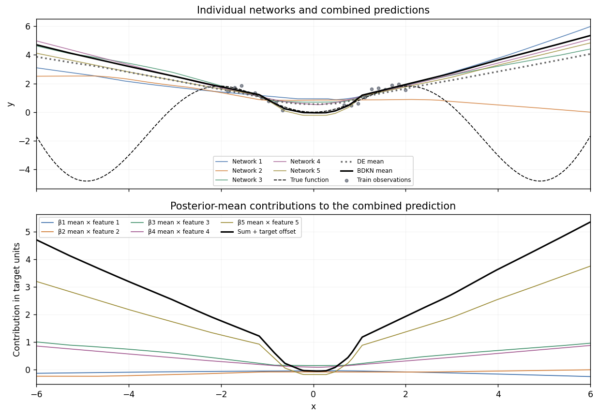

Regression comparison
Download resultsAggregation weights
Coefficients can be negative and need not sum to one. Intervals describe coefficient uncertainty; the dashed reference is DE’s fixed 1/H weight.
BDKN


Each density panel uses its own X range for readability; coefficient intervals above share a common axis. Prior reference conditions on fitted noise. Contribution shares use held-out inputs; test targets are used only for scoring.
| Network | β mean | 95% low | 95% high | P(β > 0) | Contribution share | Test RMSE | Test NLL |
|---|---|---|---|---|---|---|---|
| 1 | 0.43469 | -0.77729 | 1.64666 | 0.76846 | 0.16844 | 5.02000 | 1231149.62174 |
| 2 | 0.99304 | 0.21113 | 1.77496 | 0.99230 | 0.36008 | 4.77033 | 656706.74738 |
| 3 | 0.46964 | -0.86109 | 1.80038 | 0.76492 | 0.16942 | 4.81931 | 290912.11794 |
| 4 | -0.36685 | -1.10042 | 0.36672 | 0.15466 | 0.06824 | 3.27546 | 19.29033 |
| 5 | -0.61485 | -2.01420 | 0.78449 | 0.18515 | 0.23383 | 5.00970 | 18.78189 |
Functional repulsion · BDKN



Each density panel uses its own X range for readability; coefficient intervals above share a common axis. Prior reference conditions on fitted noise. Contribution shares use held-out inputs; test targets are used only for scoring.
| Network | β mean | 95% low | 95% high | P(β > 0) | Contribution share | Test RMSE | Test NLL |
|---|---|---|---|---|---|---|---|
| 1 | 1.16179 | 0.11850 | 2.20508 | 0.98458 | 0.59776 | 5.36057 | 281171.07408 |
| 2 | -0.12950 | -1.46872 | 1.20972 | 0.42109 | 0.05895 | 4.90403 | 630239.81436 |
| 3 | 0.11343 | -0.72333 | 0.95020 | 0.60987 | 0.04548 | 4.48061 | 120538.57263 |
| 4 | -0.35505 | -1.30159 | 0.59149 | 0.22156 | 0.16046 | 4.82505 | 13346.75803 |
| 5 | 0.25795 | -0.92245 | 1.43835 | 0.67329 | 0.13734 | 5.54569 | 856499.14916 |
Weight repulsion · BDKN



Each density panel uses its own X range for readability; coefficient intervals above share a common axis. Prior reference conditions on fitted noise. Contribution shares use held-out inputs; test targets are used only for scoring.
| Network | β mean | 95% low | 95% high | P(β > 0) | Contribution share | Test RMSE | Test NLL |
|---|---|---|---|---|---|---|---|
| 1 | -0.08037 | -0.22253 | 0.06180 | 0.12608 | 0.04075 | 14.06916 | 39.21088 |
| 2 | 1.51513 | 0.50680 | 2.52346 | 0.99739 | 0.41112 | 8.22557 | 1920847.75578 |
| 3 | -0.71094 | -2.26993 | 0.84805 | 0.17641 | 0.17849 | 7.77449 | 1965.03755 |
| 4 | -0.90898 | -1.99467 | 0.17670 | 0.04804 | 0.20239 | 7.14822 | 53.87830 |
| 5 | 1.33514 | 0.28244 | 2.38784 | 0.99224 | 0.16726 | 3.27326 | 1987.84814 |
First-order repulsion · BDKN



Each density panel uses its own X range for readability; coefficient intervals above share a common axis. Prior reference conditions on fitted noise. Contribution shares use held-out inputs; test targets are used only for scoring.
| Network | β mean | 95% low | 95% high | P(β > 0) | Contribution share | Test RMSE | Test NLL |
|---|---|---|---|---|---|---|---|
| 1 | -0.04119 | -0.56918 | 0.48680 | 0.43618 | 0.03319 | 4.90165 | 58062.26021 |
| 2 | -0.09286 | -0.56185 | 0.37613 | 0.34199 | 0.03542 | 3.37870 | 3.01777 |
| 3 | 0.21804 | -0.53280 | 0.96888 | 0.72425 | 0.18317 | 4.92919 | 4916.56753 |
| 4 | 0.17273 | -0.67323 | 1.01868 | 0.66264 | 0.14935 | 5.09264 | 69713.79532 |
| 5 | 0.77673 | 0.31620 | 1.23725 | 0.99892 | 0.59887 | 4.82669 | 114510.57796 |